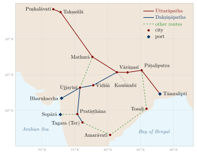
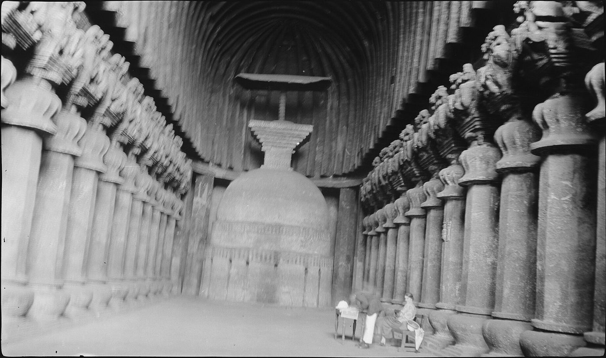

Chapter 10: Overland Trade: Routes, Caravans and Trans-Asian Networks¶
Chapter Overview
Most of the goods exchanged in pre-modern South Asia moved by road and river, not by sea. This chapter follows the overland routes within the subcontinent, above all the northern route (Uttarāpatha) and the southern route (Dakṣiṇāpatha), and the river systems that complemented them. It then looks at the people and institutions of overland trade: the caravan (sārtha) and its leader (sārthavāha), tolls, market towns, rest-houses and, in later centuries, the banjārā bulk carriers. The second half turns to the routes beyond the Hindu Kush, the so-called Silk Roads, the role of the Kuṣāṇas and of Buddhist monasteries, and the Indian merchant communities that lived and traded in Central Asia, Iran and Russia into the eighteenth century. A further section follows the routes across the Himalaya and through the north-east to Burma and Yunnan.
The chapter draws on four kinds of evidence: normative texts such as the Arthaśāstra (Chapter 2); narrative literature, especially the Pali Jātakas; inscriptions; and archaeology, supplemented by Greek, Chinese and Persian accounts. Each has its limits. The Arthaśāstra prescribes what a king’s officers ought to do and is not a description of Mauryan practice; the Jātaka stories are moral tales whose settings are conventional (caravans of “five hundred carts” are a stock formula); and the distribution of an artefact does not by itself tell us who carried it or why. The classic synthesis remains Moti Chandra’s Trade and Trade Routes in Ancient India (Chandra 1977), now supplemented by Nayanjot Lahiri’s archaeology of the early routes and by the work of Ranabir Chakravarti and Himanshu Prabha Ray (Lahiri 1992; Chakravarti 2002; Ray 1986). Seaborne trade, including the Indo-Roman trade and the sea routes sometimes called the “maritime Silk Road”, is treated in Chapter 11.
10.1 The Geography of Overland Trade¶
The physical geography of the subcontinent channelled overland movement into a limited number of corridors. The alluvial plains of the Indus and the Ganga offered the easiest going, and the long corridor between them, through the Panjab and the Ganga–Yamunā Doab, carried the greatest volume of traffic in most periods. Between the northern plains and the peninsula lay a broad belt of difficult country: the Thar desert to the west, the Aravalli hills, the Vindhya and Satpura ranges, and the forested uplands of central and eastern India. Routes crossed this belt along river valleys and through a few well-known gaps, which therefore became sites of towns, forts and toll posts (Deloche 1993).
To the north-west, the mountain wall of the Hindu Kush, the Sulaiman range and the Karakoram was pierced by passes that linked the Indus plain with Afghanistan, Iran and Central Asia: the Khyber route from the Peshawar valley to Kabul; the Gomal and Bolan routes leading to Ghazni, Qandahar and the Iranian plateau; and higher, more seasonal tracks through Swat, Chitral, Gilgit and the upper Indus. Through these passes came horses, lapis lazuli, dried fruit, woollens and, later, silk; in the other direction went Indian cotton cloth, spices, indigo, sugar and other goods (Liu 2010; Deloche 1993).
In the peninsula, the Narmadā and Tāptī valleys opened an east–west corridor from Mālwa to the Gujarat coast, while the passes (ghāṭs) of the Western Ghats linked the Deccan plateau to the ports of the Konkan. On the east, routes crossed the Chhotanagpur plateau and followed the Mahānadī towards the coast of Kaliṅga, and from there ran south along the coastal plain to the Kṛṣṇā–Godāvarī delta and the Kāverī country (Ray 1986; Deloche 1993).
Climate set the rhythm of travel. During the south-west monsoon (roughly June to September) rivers flooded, unmetalled roads turned to mud and long-distance land traffic largely stopped. Caravans normally set out after the rains, when the roads had dried and fodder was plentiful, and tried to complete their journeys before the heat of April and May made water scarce on the drier routes. Monks of the Buddhist and Jain orders were similarly required to stay in one place during the rains, a rule that reflects the same conditions (Deloche 1993).
10.2 Uttarāpatha and Dakṣiṇāpatha¶
10.2.1 The Northern Route¶
Early Buddhist and Sanskrit texts use Uttarāpatha, “the northern route”, both for a road and, by extension, for the north-west region it led to; Dakṣiṇāpatha, “the southern route”, likewise came to mean the country of the Deccan, and the modern name “Deccan” derives from it (Chandra 1977). In its fullest extent the Uttarāpatha ran from Gandhāra, with its cities of Puṣkalāvatī (Charsadda) and Takṣaśilā (Taxila), across the Panjab and the Doab to Mathurā, then down the Ganga valley through Kauśāmbī and Vārāṇasī to the cities of Magadha (Rājagṛha and, later, Pāṭaliputra), and on to the port of Tāmralipti in the Ganga delta. Branches led north into Kashmir and north-west across the passes to Kabul and Bactria (Chandra 1977; Chakravarti 2002).
This route is not the ancestor of the Grand Trunk Road in any institutional sense. The route followed by the great road built or rebuilt by Sher Shāh Sūr (r. 1540–1545) from Bengal to the Indus, sometimes called Sarak-i Aʿẓam (“the great road”) and maintained by the Mughals, ran along much the same natural corridor; the British metalled it in the nineteenth century and named it the Grand Trunk Road (Deloche 1993). The alignment persisted because the geography did, not because a single road was maintained continuously for two thousand years. Table 10.1 lists some principal stations on the two routes.
| Ancient name | Modern site | Role in overland trade |
|---|---|---|
| Takṣaśilā | Taxila, Pakistan | Gateway to Afghanistan and Central Asia |
| Śākala | Sialkot, Pakistan | Panjab city; capital of the Indo-Greek king Menander in the Milindapañha |
| Mathurā | Mathura, Uttar Pradesh | Junction of the northern route and the road to Mālwa and the west coast |
| Kauśāmbī | near Prayagraj | Ganga–Yamunā city; river and road junction |
| Vārāṇasī | Varanasi | Textile centre; river port |
| Pāṭaliputra | Patna | Mauryan capital; river port at the Ganga–Son confluence |
| Tāmralipti | Tamluk, West Bengal | Port linking the Ganga valley to the Bay of Bengal |
| Vidiśā | Besnagar, near Vidisha | Junction in eastern Mālwa |
| Ujjayinī | Ujjain | Capital of Avanti; crossroads of north–south and east–west routes |
| Pratiṣṭhāna | Paithan, Maharashtra | Sātavāhana city on the Godāvarī |
| Bharukaccha | Bharuch, Gujarat | Port at the Narmadā mouth (Greek Barygaza) |
10.2.2 The Southern Route¶
The Dakṣiṇāpatha left the Ganga valley either from Kauśāmbī or from Pāṭaliputra and crossed into Mālwa by way of Vidiśā to Ujjayinī. From Ujjayinī one branch went west to the Narmadā mouth at Bharukaccha, and another south across the Narmadā and the Tāptī to Pratiṣṭhāna on the Godāvarī and onward through the Deccan (Figure 10.1). The Pali Sutta Nipāta, in the prologue to its Pārāyana section, describes the journey of a group of disciples from the Godāvarī country northward through Pratiṣṭhāna, Ujjayinī, Vidiśā and Kauśāmbī to Śrāvastī and Magadha, a narrative that has long been used to reconstruct the stations of this route (Chandra 1977).
The Periplus Maris Erythraei (mid-first century CE) shows how the inland routes fed the western ports. It names Ozēnē (Ujjayinī) as a former royal capital from which goods were brought down to Barygaza, and describes Paithana (Pratiṣṭhāna) and Tagara (Ter) as inland markets from which goods were carried to Barygaza by wagon over difficult roads (Casson 1989). The overland and the maritime systems were thus parts of one network, a point taken up in Chapter 11.
East of the Deccan plateau, routes ran from Magadha and Kaliṅga down the coastal plain to the lower Kṛṣṇā, where the Buddhist centre of Amarāvatī and its neighbouring town of Dhānyakaṭaka stood, and on into the Tamil country. Further west, routes descended from the plateau to the Konkan ports of Sopārā and Kalyāṇa through passes such as the Nāṇeghāṭ, at the head of which the Sātavāhana inscriptions of queen Nāganikā were cut (Ray 1986).

10.2.3 Choosing a Route: The Arthaśāstra’s View¶
A passage in the seventh book of the Arthaśāstra (AŚ 7.12) offers a rare piece of explicit reasoning about trade routes, set out, as the text often does, as a debate between earlier teachers and “Kauṭilya”. The teachers prefer the water route to the land route because it costs less effort and expense and yields more goods; the text replies that a water route is liable to obstruction, cannot be used in all seasons, is a source of great danger and offers no remedy when things go wrong, whereas a land route has the opposite qualities. In the same passage the teachers prefer the route towards the Himālaya, which brings elephants, horses, perfumes, ivory, hides, silver and gold of high value; the text instead prefers the southern route because, blankets, hides and horses apart, it is richer in goods, above all conch shells, diamonds, precious stones, pearls and gold. It goes on to rank routes by whether they pass through mines, are well frequented and are cheap to use (Kangle 1960; Olivelle 2013). Whatever its date, the passage shows that the Dakṣiṇāpatha was regarded as a source of high-value goods in its own right, not merely an extension of the northern trade.
10.3 Rivers and Inland Waterways¶
For bulk goods, rivers were usually cheaper than roads. The Ganga and its tributaries, the Yamunā, the Ghāghra, the Gaṇḍak and the Son, formed the most important system of navigable waterways in the subcontinent, and the Indus with its Panjab tributaries a second. Jean Deloche’s survey of transport before the railway devotes a full volume to water transport, documenting the variety of river craft, the ferries and pontoon crossings, and the seasonal limits of navigation (Deloche 1993). Navigation was easiest when the rivers were high, but floods and shifting channels made the monsoon season dangerous; in the dry months the upper reaches of many rivers became too shallow for laden boats.
The Arthaśāstra assigns to a superintendent of shipping (nāvadhyakṣa, AŚ 2.28) responsibility for ferries, boat hire and charges on river traffic, and for the safety of navigation, which shows that river traffic was regarded as a source of revenue to be regulated (Olivelle 2013). Jātaka stories describe merchants travelling by boat along the Ganga and setting out from the river ports of Vārāṇasī and Campā (near Bhagalpur) for the sea; in the Mahājanaka Jātaka, for example, the hero takes ship from Campā for Suvaṇṇabhūmi (Chakravarti 2002). Several of the great early historic cities, Pāṭaliputra, Vārāṇasī, Kauśāmbī and Campā among them, stood on river banks at points where road and river traffic met.
The Narmadā, which flows west into the Gulf of Khambhat, was navigable only in parts but gave its name to a corridor along which towns such as Māhiṣmatī grew; the Godāvarī, Kṛṣṇā and Kāverī were less used for long-distance navigation than the Ganga but were followed by roads and settlements. River transport remained central in later centuries. European travellers of the sixteenth and seventeenth centuries describe large convoys of boats carrying salt, grain, sugar, cotton and other goods between Agra, Allahabad, Patna and Bengal, and Bengal’s rivers carried much of its rice, sugar and textiles to the ports (Deloche 1993; Raychaudhuri and Habib 1982).
10.4 Caravans: The Sārtha and the Sārthavāha¶
10.4.1 The Caravan in the Jātakas¶
Long-distance overland trade was conducted by caravans, called sārtha in Sanskrit (Pali sattha), led by a sārthavāha (Pali satthavāha). Merchants travelled together for security and to share the costs of guides, guards and draught animals. The Jātakas, whose prose commentary was compiled in Sri Lanka in the first millennium CE from older material, return to the caravan again and again, and in several stories the Bodhisatta himself is born as a caravan leader (Chakravarti 2002; Chandra 1977).
Two stories at the very beginning of the collection give a sense of the risks. In the Apaṇṇaka Jātaka (no. 1), two caravans set out across a waterless wilderness; the leader of the first is persuaded by demons disguised as travellers to throw away his water, and his caravan perishes, while the Bodhisatta’s caravan, which keeps its water, survives. In the Vaṇṇupatha Jātaka (no. 2), a caravan crosses a sandy desert by night, guided by a “land-pilot” who steers by the stars; when the pilot falls asleep the caravan goes in a circle, and it is saved only by digging for water. Behind the moral lessons lie realistic details: night marches in hot country, the carrying of water and fodder in carts, professional guides, and the constant danger of robbers in forest country (Chandra 1977).
The caravan was not an egalitarian body. Its leader and the principal merchants owned the goods and the capital; carters, drovers, guards and servants were hired, and the Jātakas and the law books mention slaves (dāsa) among the workers of merchant households. The Arthaśāstra and the later dharmaśāstras treat merchants who travel together as a kind of partnership, with rules for sharing profits and losses; these rules are discussed in Chapters 4 and 6.
10.4.2 The Sārthavāha in Inscriptions¶
The sārthavāha also appears in inscriptions, which show that caravan leaders could hold a recognised civic position: the Gupta-period sealings from Vaiśālī name a joint body of bankers, caravan traders and artisans, and the Damodarpur copper plates from north Bengal place the chief caravan trader (prathama-sārthavāha) on the district council that approved land sales (Sections 4.6.1 and 4.6.3) (Chakravarti 2002; Thaplyal 1996).
10.4.3 Bulk Carriers: The Banjārās¶
The caravans of the Jātakas carried mostly high-value goods. For the bulk trade in grain and salt in later centuries, the essential carriers were the banjārās, communities of pack-bullock owners who moved in large camps (ṭāṇḍā) with their families and herds, buying grain where it was cheap and selling it where it was dear. Irfan Habib’s study of Mughal India shows how the banjārās made possible the long-distance movement of grain on which the cities and armies depended; European travellers of the seventeenth century, such as Peter Mundy, describe meeting banjārā caravans of many thousands of oxen (Habib 1999). Because pack oxen could graze along the way and needed no roads suitable for wheeled carts, the banjārās could reach places carts could not, though their movement was slow and depended on fodder and water. They also supplied armies on campaign, a role they continued to play into the colonial period. In the colonial period the coming of the railways undermined their trade, and some banjārā groups were stigmatised by colonial legislation; their later history belongs to Volume 23, Jana–Jāti.
10.5 Tolls, Passes and Protection¶
Every state through which a caravan passed expected a share of its goods. The Arthaśāstra’s superintendent of tolls (śulkādhyakṣa, AŚ 2.21–22) sets up a toll house at the city gate; merchants declare the quantity and price of their goods; goods bear a seal, and those found without the proper seal or with false declarations are penalised by a multiple of the duty. Rates are graded by class of commodity, and some goods, such as those for sacrifices or for weddings, are exempted. The frontier officer (antapāla) collects a road cess and is required to make good goods lost to robbers within his territory (Kangle 1960; Olivelle 2013). These rules are normative and their date is uncertain, but they reflect a recurrent pattern: a state that taxed trade also undertook, at least in principle, to protect it.
In practice, tolls multiplied wherever political authority was fragmented. Mughal emperors repeatedly forbade the road toll known as rāhdārī, yet the repetition of the orders and the complaints of merchants and European travellers suggest that local officials and chiefs continued to levy it (Raychaudhuri and Habib 1982). Market dues, toll administration and state regulation of exchange are treated more fully in Chapter 7.
10.6 Market Towns and Nodes of Exchange¶
Trade routes connected settlements of very different size and function. Early Buddhist texts call a market town a nigama, and in the Mahāparinibbāna Sutta the Buddha foretells that the village of Pāṭaligāma will become a chief city and a puṭabhedana, a place where bales of goods are opened, that is, a trading centre (Chakravarti 2002). At Taxila, local copper coins carrying the word negama were probably issued by a mercantile body of the town (Allan 1936).
The Arthaśāstra (AŚ 2.1) sets out a schematic hierarchy for a planned countryside, with central places of increasing size for groups of villages. It is an administrative ideal rather than a description of any real kingdom, but it shows how the authors imagined the relation between villages, market centres and the capital (Olivelle 2013). Table 10.2 gives the terms.
| Term | Prescribed scale | Notes |
|---|---|---|
| saṃgrahaṇa | for 10 villages | Lowest collection centre |
| khārvaṭika | for 200 villages | Small town |
| droṇamukha | for 400 villages | Often taken to mean a town at a river mouth or confluence |
| sthānīya | for 800 villages | Major administrative and commercial centre |
Inscriptions supply a more concrete picture. The donors recorded at the stūpas of Bharhut and Sāñcī, and at the rock-cut monasteries of the western Deccan, often name their home towns, and the spread of these places shows which centres were linked to each other (Lüders 1912; Ray 1986). Large cities such as Mathurā, Ujjayinī, Pratiṣṭhāna and Pāṭaliputra stood at junctions of routes, combined royal administration with markets and craft production, and housed the bankers and money-changers on whom long-distance trade depended. In the early medieval period, a dense network of smaller market centres (haṭṭa, maṇḍapikā) grew up in many regions; B. D. Chattopadhyaya has argued that this reflects local and regional exchange expanding, not the general decay of trade and towns that some historians proposed for c. 300–1000 CE (Chattopadhyaya 1994; Sharma 1987).
10.7 Archaeological Evidence¶
10.7.1 Pottery and Coins¶
The Northern Black Polished Ware (NBPW), a fine, glossy pottery associated with the rise of cities in the Ganga valley from about the sixth century BCE (its beginning is variously dated between the seventh and fifth centuries) to the second century BCE, is found from the north-west to Bengal and at sites in central India and the Deccan. Its wide distribution is commonly linked to the spread of urban networks along the routes described in the texts. The ware’s spread may, however, reflect local imitation and the movement of potters as well as trade in the vessels themselves, so it is evidence of connection rather than a direct measure of commerce (Allchin 1995).
Punch-marked silver coins, issued from about the fifth or fourth century BCE, are found in hoards across much of the subcontinent, and the Chaman Hazouri and Bhir Mound hoards, which contain datable Greek coins, show that coined money was circulating in the north-western trade by the late fourth century BCE (Section 5.2).
10.7.2 Taxila and Ujjayinī¶
Taxila, excavated by John Marshall and later archaeologists, has three successive city sites: the Bhir Mound (from about the sixth or fifth century BCE), Sirkap (the Indo-Greek and Śaka–Parthian city) and Sirsukh (the Kuṣāṇa city). Finds include coins of many dynasties, glass, metalwork and objects of Mediterranean and Central Asian origin, and they show a city that drew goods from both the Ganga valley and the lands beyond the passes (Allchin 1995; Thapar 2002). Ujjayinī, the capital of Avanti, was enclosed by a massive earthen rampart early in its history and was one of the major cities of the early historic period; its role as a meeting point of routes is confirmed by the Periplus and by the many references to it in Buddhist and Jain literature (Allchin 1995; Casson 1989).
10.7.3 Inscriptions along the Routes¶
The edicts of Aśoka (r. c. 268–232 BCE) were cut at places that were evidently accessible: on routes, near towns and at frontier zones, from Kandahar in the west to Dhauli and Jaugaḍa in Kaliṅga in the east, and from the Himalayan foothills to Karnataka. Their distribution indicates the reach of Mauryan communications, though it cannot be read as a map of roads (Thapar 2002; Salomon 1998). Later, the rock-cut monasteries of the western Deccan, at Bhājā, Kārle (Figure 10.2), Junnar, Nāsik and Kānherī, were placed near the passes linking the Konkan ports to the plateau. Their donative inscriptions record gifts by merchants (vāṇija), guild heads (śreṣṭhin), artisans and Yavanas (Greeks or westerners), as well as by Sātavāhana and Western Kṣatrapa royalty, and they show monasteries and traders sharing the same routes (Ray 1986).


10.8 Goods on the Roads¶
The overland trade rested on the complementary resources of different regions. The Ganga plains produced grain, sugar and cotton; central and eastern India supplied iron, copper, timber, lac and forest products; Rajasthan and the Deccan yielded precious and semi-precious stones; Gujarat and the western Deccan had cotton and carnelian and agate for beads; the south-western coast produced pepper and other spices; and the coasts supplied salt, a commodity every household needed and which therefore moved inland in great quantity (Chandra 1977; Chakravarti 2002). The north-west imported horses, which India’s climate made difficult to breed in quality, and exported textiles.
The texts show a wide range of named commodities. The Arthaśāstra’s chapters on the treasury and on the superintendent of commerce list gems, fine textiles, aromatics and metals, including a silk called cīnapaṭṭa, “Chinese cloth” (Kangle 1960). The Periplus names cottons, muslins and other goods brought to Barygaza from the interior, as well as nard and costus from the mountains of the north (Casson 1989). In later centuries the range widened: indigo from Bayana and Sarkhej, cotton cloth from Gujarat and Bengal, sugar, saltpetre and opium from Bihar, all moved overland and by river to inland markets and ports (Raychaudhuri and Habib 1982).
10.9 Roads, Rest-Houses and Ferries¶
10.9.1 Texts and Edicts¶
Most pre-modern roads in South Asia were earthen tracks, cleared and levelled rather than paved, and their maintenance depended on whoever controlled them. The Arthaśāstra, in its chapter on laying out the fortified city (AŚ 2.4), prescribes widths for different classes of road (Olivelle 2013); such rules tell us what the authors thought proper, not what was built.
Aśoka’s own inscriptions are more direct. In Rock Edict II the king says that he has had wells dug and trees planted along the roads for the use of animals and men, and has provided for medical treatment and medicinal plants. In Pillar Edict VII he states that he has had banyan trees planted along the roads to give shade to animals and men, mango groves planted, wells dug at regular intervals (the distance is variously interpreted), rest-houses built, and watering places made in many places for the use of animals and men; he adds that such benefits had been provided by earlier kings too, and that his purpose was that people should follow the Dhamma (Thapar 2002; Salomon 1998). The edicts present these works as acts of moral welfare rather than commercial policy, but travellers and caravans were among those who used them.
The Greek ambassador Megasthenes, who visited Pāṭaliputra around 300 BCE, survives only in quotations by later authors. According to Strabo’s summary (Geography 15.1.50), Megasthenes described a class of officials who, among other duties, built roads and set up pillars at intervals of ten stadia to show the by-roads and distances (McCrindle 1877). The report is second-hand and filtered through Greek categories, and it is no evidence of a surveyed or mapped road network; no maps from Mauryan India survive.
10.9.2 Monasteries, Dharmaśālās and Sarāʾīs¶
Religious institutions supplied much of the lodging along the routes. Buddhist monasteries in the western Deccan and in the north-west were sited on trade routes, and monks and merchants travelled the same roads; temple towns and pilgrimage centres later offered similar facilities, and rest-houses for travellers (dharmaśālā) were a common object of pious gifts. Under the Delhi sultans and the Mughals the sarāʾī, a walled enclosure with lodgings, stabling and a market, became the characteristic roadside institution. Sher Shāh is credited by Persian historians with building sarāʾīs at regular stages along his great road, and the Mughals built more, along with bridges and the kos mīnārs (distance pillars) that still stand along parts of the Agra–Lahore road (Deloche 1993; Richards 1993). Ibn Baṭṭūṭa, who reached India in 1333, describes the Tughluq relay post of horse and foot runners, by which letters and goods reached the capital from distant provinces with great speed (Ibn Baṭṭūṭa 1958).
Ferries were a constant feature of travel on the rivers of the north and east. They were a source of revenue for states and local lords, and the Arthaśāstra lists ferry charges. Permanent bridges over the large rivers were rare before the nineteenth century, and bridges of boats served on major routes (Deloche 1993).
10.10 Gandhāra, the Kuṣāṇas and the Silk Roads¶
10.10.1 The “Silk Road” as a Modern Term¶
The term “Silk Road” (German Seidenstraße) was coined by the geographer Ferdinand von Richthofen in 1877. It is convenient but misleading: silk was one commodity among many, there was no single road but a shifting web of routes linking oasis towns, and most goods travelled only short stages, changing hands many times. Valerie Hansen has stressed how much of the documented traffic was local and how important religious and diplomatic exchange was alongside commerce (Hansen 2012; Liu 2010). India’s connection with this web ran through the north-western passes.
10.10.2 Routes beyond the Passes¶
From Gandhāra, the main route crossed the Khyber to Kabul and then the Hindu Kush to Balkh (Bactra), the great junction of Bactria. From Balkh, one road led west through Merv into Iran; another north through Sogdiana to Samarkand; and others east over the Pamirs to Kashgar at the western end of the Tarim basin. Around the Taklamakan desert, routes ran north through Kucha and Turfan and south through Khotan and Niya, meeting near Dunhuang before entering China proper (Hansen 2012; Beckwith 2009). A more direct but very difficult route led from Gandhāra up the Indus gorges through Chilas and Gilgit to the Karakoram. Thousands of rock carvings and short inscriptions in Kharoṣṭhī, Brāhmī, Sogdian, Bactrian, Chinese and other scripts along the upper Indus, left by travellers, pilgrims and traders, show that this route was used over many centuries (Salomon 1998).
The Chinese envoy Zhang Qian, sent west by the Han emperor Wu, reported on his return around 126 BCE that he had seen in Bactria bamboo and cloth from Shu (Sichuan), which he was told had been brought from Shendu, that is India. His report is often taken as evidence that an indirect trade between south-west China, eastern India and Bactria already existed (Liu 2010).
10.10.3 The Kuṣāṇa Empire¶
The Kuṣāṇas, a dynasty of Central Asian origin, built in the first to third centuries CE an empire that stretched from Bactria across the Hindu Kush to Gandhāra and the Ganga plain as far as Mathurā and beyond. It thus brought under one authority the junction where the routes from Central Asia met those leading to the Indian interior and to the ports of the west coast. Kaniṣka I, the best known of its rulers, probably came to the throne in the 120s CE, although his date has long been debated (Beckwith 2009; Thapar 2002).
The Kuṣāṇas issued an abundant gold coinage, begun under Vima Kadphises, on a weight standard close to that of the Roman aureus; whether its gold came largely from melted Roman coin is debated. The coins carry Greek, Iranian, Indian and Buddhist deities; a few of Kaniṣka’s coins show the Buddha with the Greek-script legend BODDO. This religious pluralism on the coinage is often linked to the empire’s role at a crossroads of peoples and traditions (Thapar 2002; Beckwith 2009). The rich finds made in 1937–1939 at Begram, north of Kabul, include Indian ivories, Roman bronzes and glass, and Chinese lacquer, assembled in sealed rooms of a building whose purpose (royal store, merchant’s warehouse or something else) and date are still discussed. They illustrate the range of goods that reached the region in the Kuṣāṇa period (Liu 2010).
10.11 Buddhism, Monasteries and Trade¶
The spread of Buddhism along the trade routes is one of the best-documented links between commerce and religion in Asian history. Buddhist texts treat trade as a legitimate occupation, and merchants were among the most prominent lay supporters of the order. The donative inscriptions at Bharhut and Sāñcī name householders, merchants and bankers among the donors (Lüders 1912), and in the western Deccan, as Himanshu Prabha Ray showed in Monastery and Guild, the location of monasteries near the passes and the frequency of mercantile donors point to a close relationship between the monastic establishments and the trade of the Sātavāhana period (Ray 1986). In a later study Ray extended the argument to the links between Buddhism and the maritime networks of early South Asia (Ray 1994).
Monasteries also handled money. Inscriptions record permanent endowments (akṣaya-nīvī) deposited with guilds, the interest on which was to provide for monks; the mechanics of these deposits are discussed in Chapter 6, and monasteries as economic institutions in Chapter 9.
Xinru Liu’s Ancient India and Ancient China argued that Buddhist devotion itself generated trade. The demand of Buddhist communities in China for relics and for the “seven treasures” (precious substances such as gold, silver, lapis lazuli, crystal, pearl and coral) used in worship, and the demand of Indian and Central Asian monasteries for silk for banners and robes, sustained a trade between India and China in the first six centuries CE (Liu 1988). Monasteries in Gandhāra and along the oasis routes, at Bāmiyān, Khotan, Kucha and Dunhuang, served as halting places for pilgrims and traders alike. Translators such as Kumārajīva (c. 344–413), born in Kucha to an Indian father, moved along these same routes, and Indian texts reached China in the baggage of merchants as well as monks (Foltz 2010).
Tansen Sen’s study of Sino-Indian relations from 600 to 1400 traces a change in this relationship. In the Tang period, Buddhism, diplomacy and trade were closely bound together; from about the eleventh century, as Buddhism declined in India and the Song state encouraged maritime commerce, exchange between India and China became increasingly commercial and increasingly maritime (Sen 2003). The Chinese pilgrims who travelled to India, among them Faxian (travelled 399–412), Xuanzang (629–645) and Yijing (671–695, by sea), left accounts that are valuable for the routes and towns they passed through; they are discussed in Volume 21, Bhūgola.
Note: Ideas along the routes
The routes carried ideas as well as goods: Buddhist texts and art, Indian astronomy and astrology (Indian astronomers served at the Tang court in the eighth century), medical knowledge and, by way of Iran and the Islamic world, the Indian decimal place-value numerals. Transmission was rarely one-way; Gandhāran art drew on Hellenistic and Iranian traditions, and India in turn received techniques and motifs from Iran and Central Asia. These exchanges are treated in Volume 11, Gaṇita, Volume 12, Khagola Jyotiṣa, and Volume 14, Rasāyana (for crucible steel) (Foltz 2010; Liu 2010).
10.12 Indian Merchants beyond the Hindu Kush¶
10.12.1 Gāndhārī Documents and Sogdian Intermediaries¶
Some of the most direct evidence for Indian influence in Central Asia comes from the hundreds of documents in Kharoṣṭhī script found by Aurel Stein and others at Niya and near Loulan, on the southern edge of the Taklamakan. Written mostly on wooden tablets in the third and fourth centuries CE, they are the administrative and legal records of the kingdom of Shanshan (Kroraina), which used a Gāndhārī Prakrit as its official language. They deal with taxes, land, disputes and the movement of people and animals, and they show silk being used as a means of payment (Hansen 2012; Salomon 1998). They attest the reach of Gandhāran language and administrative practice rather than a large community of Indian traders, but they are part of the same network.
Much of the long-distance trade between Central Asia and China in the first millennium CE was in the hands of Sogdians from Samarkand, Bukhara and neighbouring cities. Their inscriptions on the upper Indus show that they also travelled towards India. One of the “Ancient Letters” written by Sogdian merchants in the early fourth century and found near Dunhuang reports that, after the sack of Luoyang in 311, the Indians and Sogdians there had died of starvation, a glimpse of Indian traders living in a Chinese city (Hansen 2012).
10.12.2 Indian Merchant Diasporas, c. 1500–1800¶
Overland trade between India, Iran and Central Asia remained important long after the first millennium. In the Sultanate and Mughal periods the most valuable import across the north-western passes was horses. Indian rulers needed large numbers of cavalry mounts and could not breed enough of the required quality at home, so horses came every year from Central Asia and Afghanistan through Kabul and Qandahar, while Persian and Arabian horses came by sea to the western ports (Levi 2002; Wink 1990). The trade in the other direction included Indian cotton textiles, indigo, sugar, spices and enslaved people taken from India, whom Central Asian sources record among the goods reaching Kabul and Bukhara (Levi 2002).
Stephen Dale and Scott Levi have reconstructed the history of the Indian merchant communities that carried much of this trade. From the sixteenth century, merchants and moneylenders from Multan and the Panjab, many of them Khatrīs, lived in towns across Iran, Afghanistan, Central Asia and southern Russia, organised through family firms based in India. They traded in Indian cloth and lent money, often to peasants and craftsmen, and they were active in Isfahan, Bukhara, Samarkand and many smaller towns. In the seventeenth century, Indian merchants were established at Astrakhan on the Volga, where the Russian authorities allowed them a trading house of their own (Dale 1994; Levi 2002). Armenian merchants of New Julfa, Afghan and Central Asian traders, and Persian firms shared these routes with them; no single community dominated the caravan trade.
10.13 The Himalaya and the North-East¶
The passes of the Hindu Kush were not the only overland links. The Himalaya, often imagined as a barrier, was crossed by many routes, from Ladakh in the west to Sikkim and Bhutan in the east, and beyond the Brahmaputra the hills of Assam and Manipur connected Bengal with Burma and Yunnan. This trade was small in value beside the caravan trade of the north-west, but it was old and persistent, and for the peoples of the mountains it was a main source of livelihood.
The Arthaśāstra already knows the Himalayan route as a source of high-value goods (Section 10.2.3), and among fine woollens it names a rain-proof blanket of Nepal (AŚ 2.11). In the seventh century the Tibetan empire opened a further way between India and China: the Tang envoy Wang Xuance reached India through Tibet and Nepal, and Buddhist monks and texts went the same way to Tibet (Sen 2003). The exchange rested on contrasting environments. The Tibetan plateau produced salt from its lakes, wool and the fine under-wool of goats (pashm), yak tails, musk, gold dust and borax (ṭaṅkaṇa), which goldsmiths used as a flux; the hills and plains sent back grain, cloth, sugar and metal goods. Communities living near the passes, among them the Bhoṭiyās of Kumaon and Garhwal and the Thakalis and Sherpas of Nepal, carried this trade and lived from it, exchanging Tibetan salt for hill grain in a seasonal cycle that Christoph von Fürer-Haimendorf could still observe in the mid-twentieth century (Fürer-Haimendorf 1975).
The Kathmandu valley stood on the main route between the Gangetic plain and Lhasa. From the seventeenth century Newar merchants of the valley kept trading houses in Lhasa, and the Malla kings of the valley struck silver coins for circulation in Tibet. Quarrels over debased coin and over the trade contributed to war between the Gorkha state of Nepal and Tibet in 1788–1792, which ended only when a Qing army intervened. In the west, Leh in Ladakh was the entrepôt that linked Kashmir and the Punjab with western Tibet and with Yarkand in the Tarim basin. Its most valuable traffic was pashm from the Changthang plateau, carried to Kashmir for the shawl weavers. After a war between Tibet and Ladakh, in which Ladakh was helped by the Mughal governor of Kashmir, the treaty of Tingmosgang (1684) reserved the pashm trade to Ladakh and Kashmir and regulated the official missions between Leh and Lhasa. Janet Rizvi has reconstructed the caravans of this trade, in which great merchant houses and peasant traders took part, into the twentieth century (Rizvi 1999).
The East India Company looked to the Himalaya early. Warren Hastings sent George Bogle to the Panchen Lama at Tashilhunpo in 1774 in the hope of opening a trade route to Tibet, and British pressure culminated in the armed mission of 1903–1904 led by Francis Younghusband, after which trade marts were opened in Tibet at Gyantse, Yatung and Gartok. In the first half of the twentieth century Kalimpong was the chief market for Tibetan wool brought down over the Jelep La. That trade was cut off after 1959 and the war of 1962; a small border trade through the Nathu La was reopened in 2006.
To the east, the report of Zhang Qian that goods of Sichuan reached Bactria by way of India (Section 10.10.2) is the earliest hint of a route from south-western China to eastern India. The Ahom rulers of Assam came from upper Burma across the Patkai hills in the thirteenth century. Between Yunnan, Burma, Assam and Bengal moved horses, silver, salt and cloth, and from the Indian Ocean came cowries: Bin Yang has shown that cowries, brought from the Maldives by way of Bengal and Burma, served as money in Yunnan from about the ninth century to the seventeenth (Yang 2008). These routes were carried mainly by hill peoples and Yunnanese caravan traders, and in the colonial period the sea route across the Bay of Bengal overshadowed them.
10.14 Did Overland Trade Decline?¶
Debate: The “decline” of the overland routes
A common narrative holds that the overland Silk Roads declined from the tenth century, revived briefly under the Mongols and were then made obsolete, first by the growth of Indian Ocean shipping and finally by the Portuguese arrival in 1498 and the European companies. The narrative contains some truth. The bulk of India’s long-distance trade in textiles, rice, sugar and pepper went by sea, and maritime trade grew strongly from the late first millennium (Chapters 12 and 18).
But “decline” is the wrong word for the land routes. Within South Asia, the great majority of goods always moved by road and river, and the inland trade grew with the cities and armies of the Sultanate and Mughal periods. Across the passes, the evidence assembled by Dale (1994) and Levi (2002) shows that the caravan trade between India, Iran, Central Asia and Russia was large and growing in the sixteenth and seventeenth centuries, alongside the European seaborne trade rather than in competition with it. Central Asian horses, which could only come overland, kept the passes busy, and Indian merchant communities abroad flourished into the eighteenth century. Sea and land trade were complementary parts of the same commercial system; changes in their relative weight were real but gradual, and they varied by commodity and region (Sen 2003; Dale 1994; Levi 2002).
What did change, in the long run, was the political and technological setting. The fragmentation of the Mughal and Safavid states in the eighteenth century, the closing of Central Asian markets under Russian and British imperial rivalry, and above all the railways of the later nineteenth century reshaped Indian overland trade. The railways took over the bulk traffic of the banjārās and the river boats, and tied the interior to the colonial ports; this transformation is discussed in Chapter 19.
Further Reading¶
For the early routes, Chandra (1977) remains the standard survey, and Chakravarti (2002) the best collection of essays on traders and trade in early India; Ray (1986) links the Deccan routes to Buddhist monasteries. Deloche (1993) is indispensable for roads, rivers, vehicles and boats before the railways. Lahiri (1992) examines the archaeology of the routes before c. 200 BCE, and for the Himalaya Rizvi (1999) and Fürer-Haimendorf (1975) describe the trans-Himalayan trade. On the Silk Roads, Hansen (2012) and Liu (2010) are accessible introductions, while Liu (1988) and Sen (2003) treat India–China exchange in depth. For the later caravan trade and the Indian merchant diaspora, see Dale (1994) and Levi (2002), and for the banjārās and the Mughal economy Habib (1999).